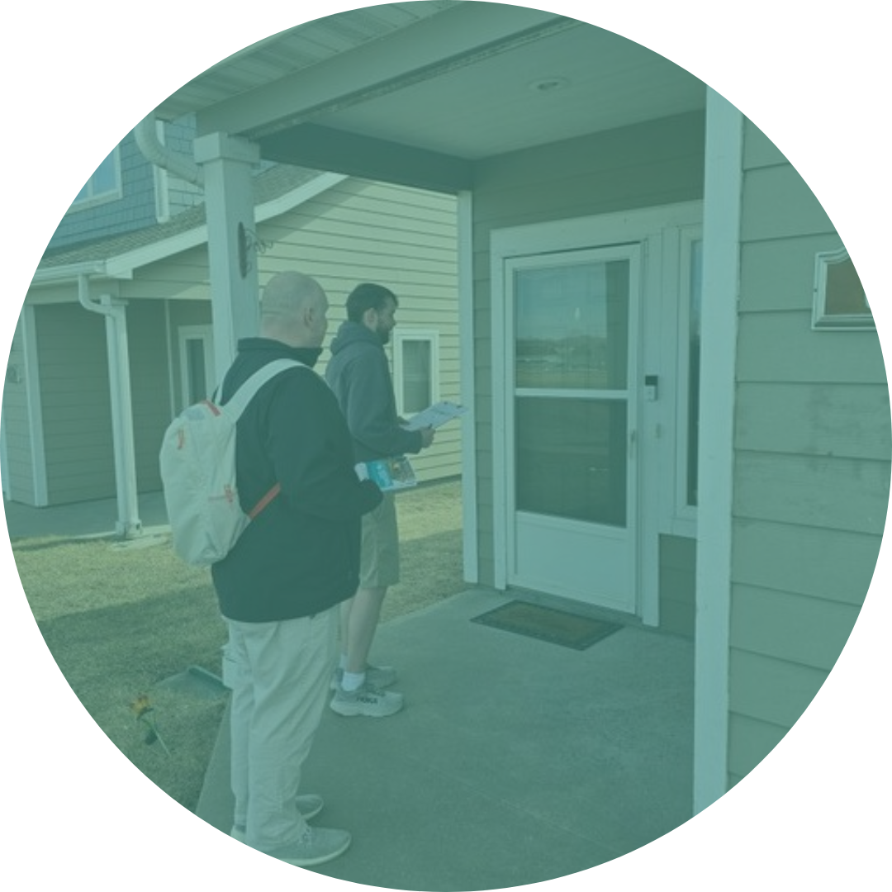

<section class="page-section" id="{{ site.data.sitetext[site.locale].about.section | default: "about" }}">
    <div class="container" min-height="320px">
	
 <p> Flint Hills Tenants United is a local grassroots organization of diverse renters from the Flint Hills area of Kansas. Our mission centers on fostering solidarity among tenants, promoting fair housing practices, and striving for a community where everyone has access to safe, affordable, and equitable living conditions.</p>

<p>We do this through supporting the establishment of tenant associations, providing education on tenant rights, and sharing resources for regaining autonomy in the struggle toward holding landlords and property management companies accountable.</p>
    
    </div>
</section>
